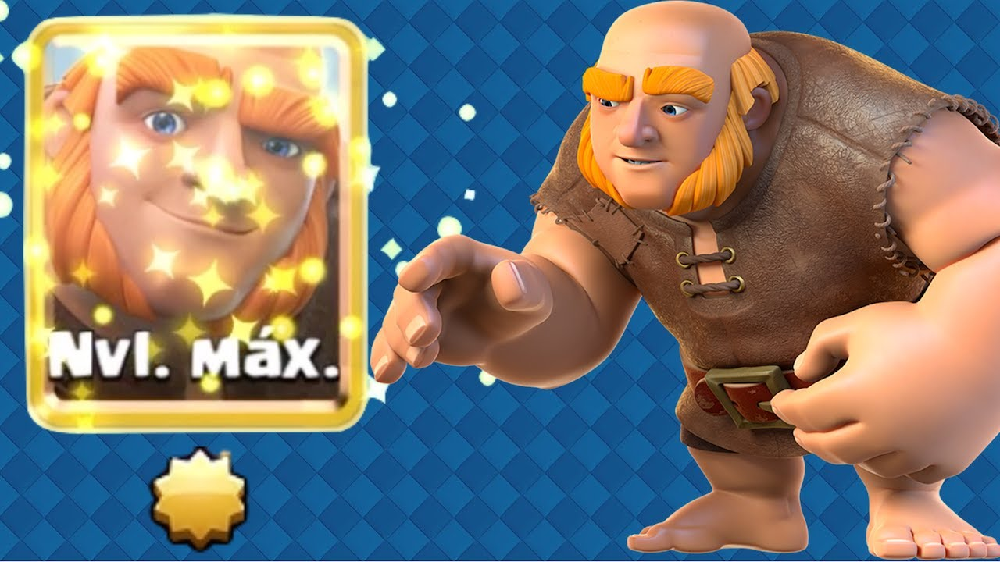
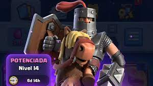
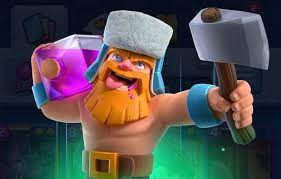

Bienvenido al juego móvil de Clash Royale
En este juego, debes construir y defender tu base contra otros jugadores. Prepa
Personajes de Clash Royale
-
Gigante
El Gigante es una carta de rareza común en Clash Royale. Su alto nivel de puntos de vida y su capacidad para hacer daño significativo a estructuras hacen que sea una carta muy popular.
-
Príncipe oscuro
El Príncipe Oscuro es una carta de rareza épica en Clash Royale. Su habilidad de carga le permite alcanzar rápidamente las estructuras enemigas y su daño significativo lo hace un rival formidable en la arena.
-
Leñador
El Leñador es una carta de rareza legendaria en Clash Royale. Su velocidad y habilidad de tala lo hacen un defensor formidable y su furia especial puede mejorar significativamente el rendimiento de tus tropas.